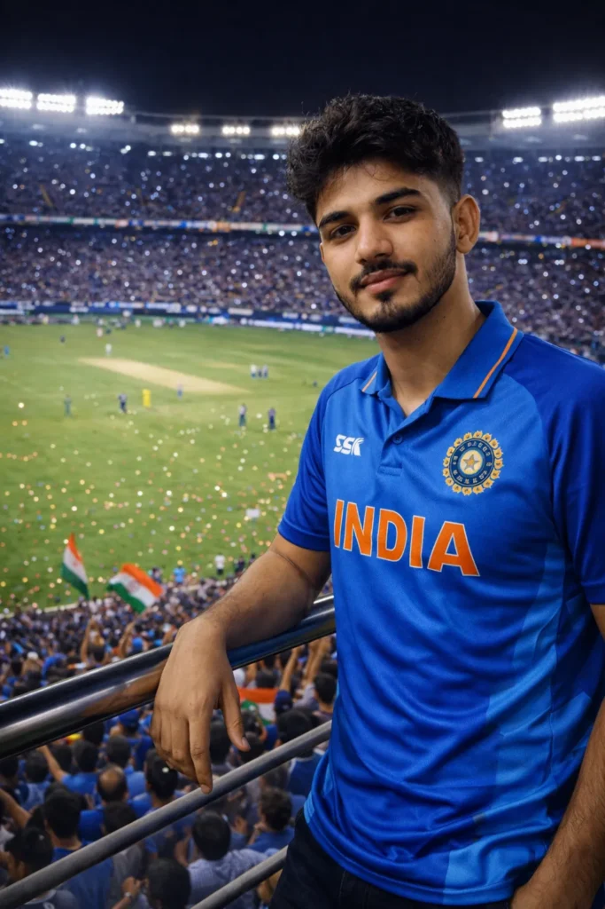
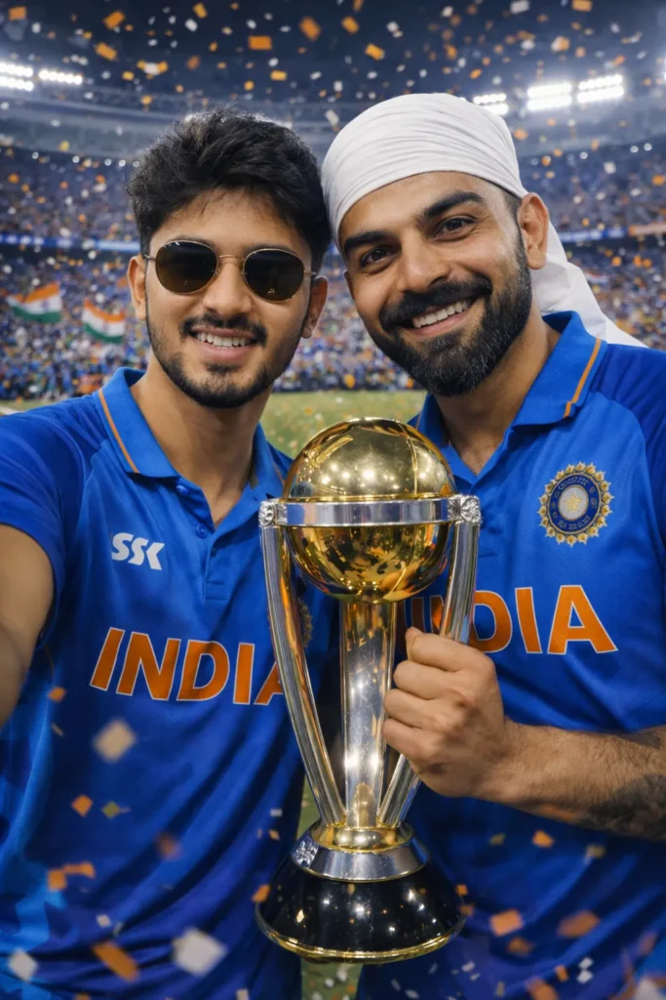
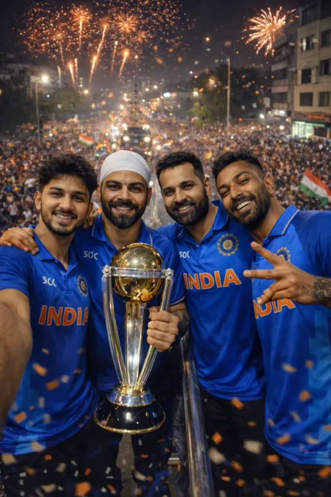
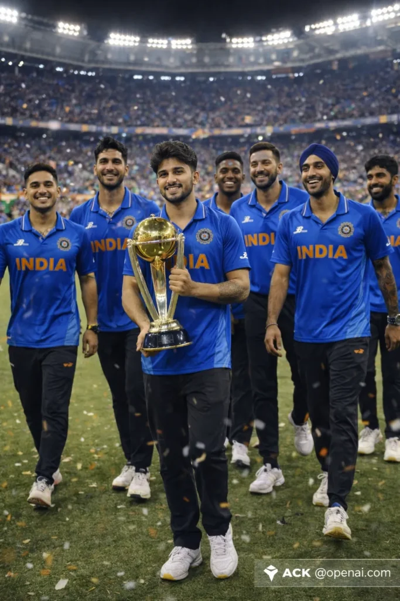

IMPORTANT – FACE LOCK (ABSOLUTE) Maintain the exact facial identity from the uploaded user photo and transform the user into a hyper-realistic live-action cricket fan standing inside Narendra Modi Stadium during the T20 World Cup Final. The user is wearing a blue India cricket jersey with “INDIA” text across the chest, stylish sunglasses, and holding the phone in selfie position with one arm extended. Behind the user the massive stadium is completely packed with cheering fans waving Indian and New Zealand flags, bright stadium floodlights illuminating the entire field. In the center of the pitch the T20 World Cup trophy stands on a podium while fireworks explode in the night sky above the stadium roof. The scoreboard screen shows India vs New Zealand T20 World Cup Final creating a dramatic championship atmosphere. Ultra-realistic photography, cinematic lighting, detailed crowd depth, authentic stadium environment. Aspect ratio 9:16.Negative prompt: cartoon, CGI rendering, anime style, distorted face, unrealistic crowd, low resolution.

? AI PROMPT
IMPORTANT – FACE LOCK (ABSOLUTE) Maintain the exact facial identity of the uploaded user photo and transform the user into a hyper-realistic cricket fan standing on the spectator balcony railing inside Narendra Modi Stadium during a night match. The user is wearing a blue India cricket jersey, leaning slightly on a metal railing while looking confidently toward the camera. The gigantic cricket field spreads behind the user with bright green grass and players visible far below. Powerful white stadium floodlights shine from above, while thousands of spectators fill the stands holding glowing phone lights creating a magical night match atmosphere. The crowd forms a sea of blue jerseys cheering loudly. The perspective is cinematic with realistic depth of field, stadium architecture clearly visible, ultra-realistic textures and lighting. Aspect ratio 9:16.Negative prompt: anime illustration, cartoon rendering, unrealistic lighting, distorted body proportions, blurry face

? AI PROMPT
IMPORTANT – FACE LOCK (ABSOLUTE) Maintain the exact facial identity from the uploaded user photo and transform the user into a hyper-realistic cricket fan celebrating on the field inside Narendra Modi Stadium after a championship match. The user is wearing a blue India cricket jersey and round sunglasses, holding the phone for a selfie while standing beside a famous Indian cricketer wearing the official India team jersey and white celebration head wrap. Both are smiling at the camera while proudly holding the ICC World Cup trophy between them. The stadium behind them is completely packed with cheering fans and waving Indian flags. Bright stadium lighting illuminates the scene and confetti floats through the air, creating a powerful championship celebration moment. Ultra-realistic sports photography style with sharp facial detail and cinematic lighting. Aspect ratio 9:16.Negative prompt: cartoon style, CGI rendering, distorted faces, unrealistic trophy proportions.

? AI PROMPT
Keep my face 100% same as reference image, no face change. Ultra-realistic victory parade in Ahmedabad city after championship win. I stand on the open roof of a celebration bus holding the same tall silver trophy. With Virat Kohli, Rohit Sharma, Hardik Pandya and Mohammad Siraj, all wearing India jerseys. Huge crowd cheering on streets, fireworks in sky, cinematic lighting, 8K DSLR clarity.

? AI PROMPT
Keep my face same as reference. Ultra-realistic walking celebration at Narendra Modi Stadium. I walk on pitch holding trophy with Ishan Kishan, Shivam Dube, Tilak Varma, Axar Patel, Arshdeep Singh, Jasprit Bumrah. Stadium lights, cheering fans.
Cricket fans love celebrating India’s victories. Now you can create your own celebration photos using AI. With the right AI prompts, you can place yourself inside a stadium with Indian players and the World Cup trophy.
This guide will show you the best India World Cup celebration AI photo editing prompts.
These prompts help you create ultra-realistic images with AI tools.What Are AI Photo Editing Prompts?
AI photo prompts are detailed text instructions. They tell the AI how to generate an image.A good prompt includes:- Scene description- Lighting style- Camera angle- Background details- Realistic effectsWith strong prompts, you can create images that look like real professional sports photography.
Why India World Cup Celebration AI Photos Are TrendingThese AI edits are becoming very popular.
Reasons include:- Fans want photos with their favorite players- People want to imagine celebrating a World Cup win- AI tools make editing easy- The results look ultra-realisticYou can appear inside Narendra Modi Stadium, holding the ICC World Cup trophy with Indian cricketers.